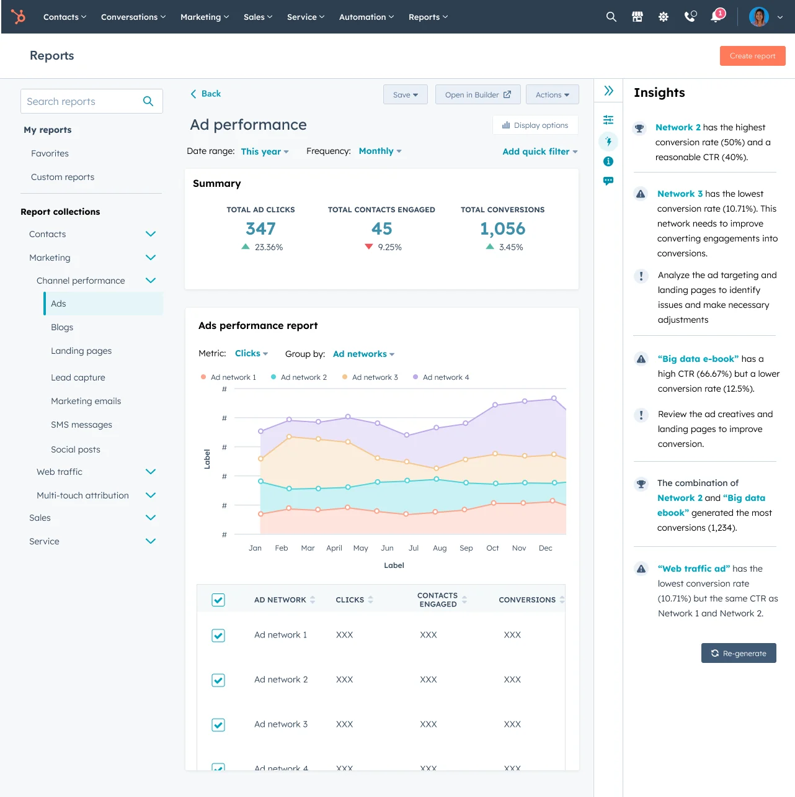
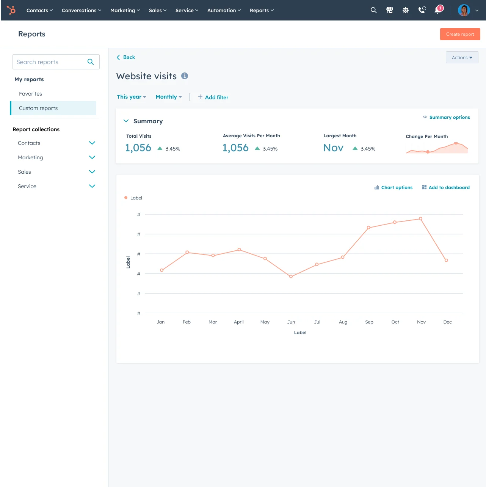

AI & data product designer · ex-HubSpot, ex-IBM Watson Health
I help people make good decisions with complex data.
Data platformsAnalyticsDesignDecisions
Selected work
Three AI-powered products from HubSpot, each taking people from data to decisions.

Lead Scoring
Turning marketing signals into sales action, from guesswork to a data-backed score in a few clicks.
+17% more scores created
AI Insights in Reporting
HubSpot's first AI product: natural-language analysis of reports that helps users act on their data.
185k users, +25% monthly usage
Single Report Viewer
Consolidating many report templates into one platform experience used by hundreds of thousands of people.
+32% usage, 301k users
01
Curate, don't dump or dictate
I design for how people actually read data, whether the curator is a chart, a nudge or an AI model. I surface what matters to people who know the business better than the data.
02
Nudge with evidence
Defaults, templates, confidence signals, previews and alerts make the better choice the easier one. Each nudge earns its place through research or usage data.
03
Tie every insight to an outcome
I define success in user behavior and business metrics before designing, then build reusable platforms and phase the vision so value ships early.
About me
My path to design ran through economics, community development and content strategy, and then a Master of Science in Information from the University of Michigan, where I focused on HCI and data analytics. Since then my work has been about helping people understand data well enough to act on it.
That work has put me at the front of applied AI. I've designed and delivered the first AI products at two organizations, IBM Watson Health and HubSpot. I treat AI as a curator: it should summarize, highlight and explain, so people can decide with confidence.
I'm a continuous learner. I'm now earning a Master of Science in Management at the Gies College of Business at the University of Illinois, because design as a practice is too often disconnected from business outcomes. I want to close that gap: speak the language of strategy and operations, and show how design decisions move the numbers a business cares about.
I'm also learning that the "soft skills" of leadership are closer to a hard science. You can form hypotheses about how a team works, run experiments, and build teams that stay resilient through reorgs and pivots. I bring the same evidence-led mindset to leading people that I bring to designing products.